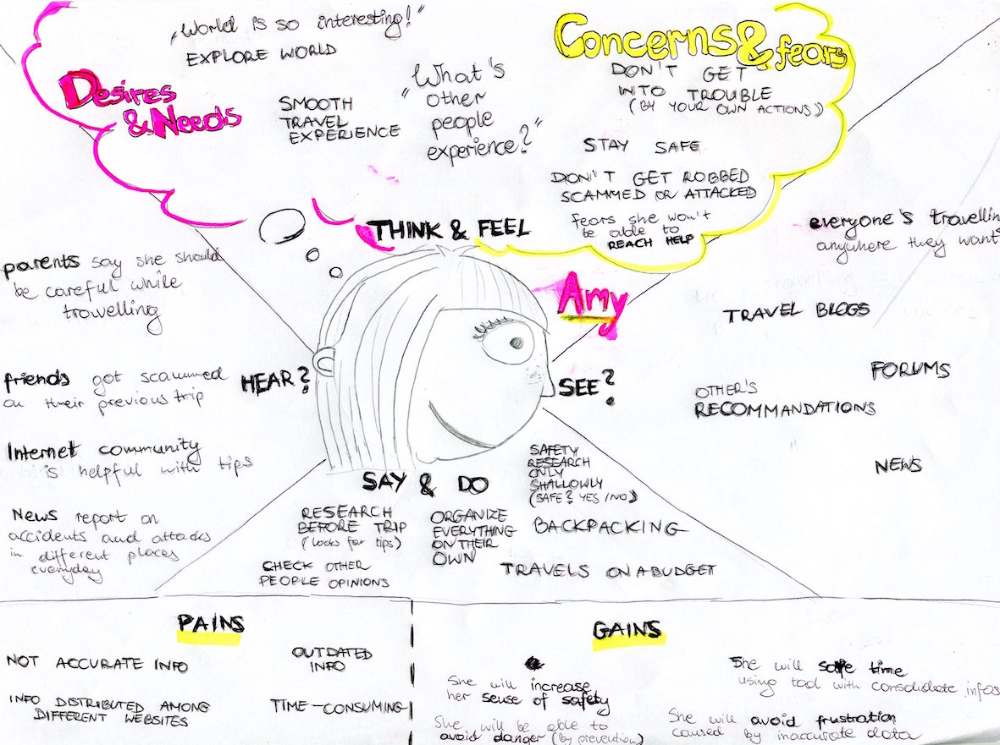
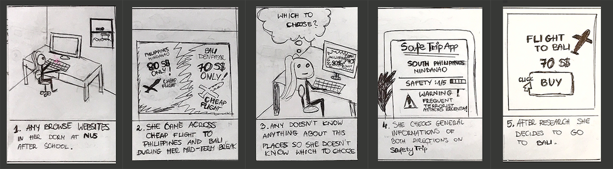
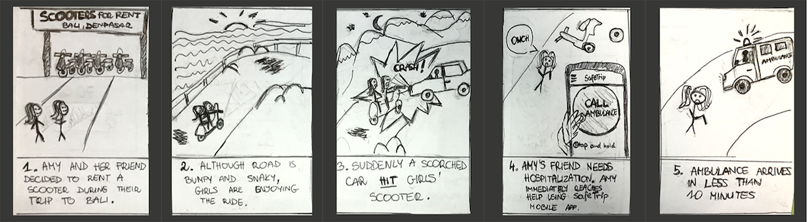

Empathize
USER STUDY
Our initial target users are backpackers, traveling either alone or in a group. We did interviews with over 10 backpackers to analyse the user behaviours, problems, needs, current solutions, and their expected solutions.
Problems
Currently users search information of their destinations through Google, on embassy websites and tourist websites/forums. However, they find it troublesome to search through all the websites. It is even harder to sift out useful information as information online can be outdated or inaccurate.
User needs
- To know the general safety of their surroundings.
- To know some recommended reactions or where to get help under their own specific situations.
Empathy map
Define
PERSONAS
Based on our user study results, we confirmed that the group most concerned about safety is female. We decided to focus on young females travelling either alone or with their female friends on the self-organized backpacking trips.
Define
PROBLEMS
Based on our previous user study and the definition of our personas, we concluded that our users would have the following problems/needs:
1. Gathering safety information of the destinations
Research on general safety information of destinations are time-consuming because of:- Lack of integrated results - information scattered in different websites
- Lack of information about real experiences from others - users need to ask around or browse through a few blogs, forums
- No effective filtering of results
2. Gathering safety tips
Many users spend much time on research about general safety tips before travelling3. Prompt assistance in an emergency
Users would want to reach help quickly when they encounter issues/emergencies during the tripDefine
STORYBOARDS
Amy does research for her trip
Amy has an emergency
Ideate
SOLUTIONS
1. Safety research
- Safety map: visualising safety ratings of the regions
- General safety report: aggregating crucial safety information
- News Board: following latest incidents happening in the regions
- Safety Tips: gathering useful advice on dos and don'ts
2. Community
Forum for users to view comments and tips from previous travellers, and also write new comments. Forum posts can be sorted by date and popularity, as well as filtered by place, allowing users to find the most accurate, updated, and important information in the forum.
3. Emergency handling
- “Emergency numbers” - providing quick access to all emergency numbers and embassy contact for user’s current travel destination
- “Emergency map” - providing quick views to closest institutions needed in case of emergency (e.g. Pharmacy, Hospital, Police station)